奇虎360Xmanager集群管理系统介绍
转载自外部-lxw的大数据田地 » xManager–通用产品集成、快速交付、监控运维解决方案
xManager–通用产品集成、快速交付、监控运维解决方案
简介
为将360大数据能力赋能给更多的政企用户，360系统部构筑了通用运维解决方案——xManager，
用于在政企项目交付中实现快速安装部署及运维，降低交付与运维成本
这是一套类似CDH，HDP的大数据集成解决方案
概述
xManager 经过一年多的迭代研发，以及在多个政企项目中的实践，已经进化成一款支持任意产品集成，实现快速私有化安装部署、监控运维的解决方案。
作为一个面向企业级复杂业务系统、数据化驱动的智能运维平台，xManager核心功能模块包括集群管理、服务管理、数据收集、风控中心、智能运维中心、数据分析与可视化、安全审计、基础管理，功能架构如图所示：
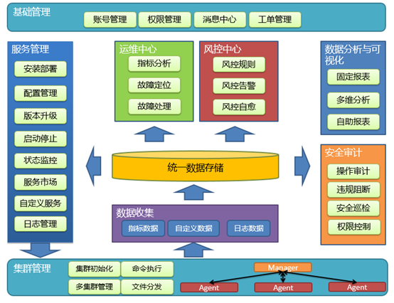
主要特性：
- 负载能力：支持数万台节点（服务器）的管理，并可以横向扩展；
- 产品集成能力：支持任意产品（软件）的集成，并进行图形化快速安装部署、监控运维；
- 服务管理与运维能力：具备服务的日常运维、配置变更、状态监控、数据收集等能力；
- 数据收集能力：内置多个数据收集器，包括机器基础指标收集，大数据基础设施组件指标收集等；同时支持用户自定义收集，日志数据收集等；
- 安全审计能力：从细粒度权限控制、安全巡检、违规阻断、操作审计等维度，全方位保障平台安全；
- 数据分析与可视化能力：支持固定报表、多维分析、自助报表的数据分析与可视化能力；
- 风控能力：支持对服务状态及收集上来的指标数据进行风控规则的配置，当触发风控规则，实现精准告警，必要时，实现问题与故障的自愈；
- 文件分发与命令执行能力：可在秒级完成对数万节点的文件分发及命令下发执行；
- 国产环境适配能力：支持国产麒麟操作系统、飞腾CPU、GBase8s数据库；
功能介绍及主要设计
00. 概览
分成如下层次:
| 机器(节点) | 集群名 | 分组名 | 应用名 | 程序角色 | 进程id(父进程) | 端口列表 |
|---|---|---|---|---|---|---|
| tw06a371 | lichen | mata | yarn | jobtracker | 12320 | 8081，8082，8083 |
整体架构：
- JavaWeb后端，前端，Nginx，数据库，Agent(Python和虚拟环境)
- Agent和JavaWeb后端api进行交互，中间有消息队列通信
和CDH架构基本一致，cdh服务器端采用javaWeb开发，采用mysql存储配置数据，采用nginx提供接入服务，
agent端同样采用python开发，提供虚拟环境；
采用supervisord管理后台服务。
01. 自身向导式安装
xManager系统由JavaWeb后端、前端、Nginx、数据库等核心组件构成，其自身的安装亦有一定的复杂性。为此我们设计了用于安装XManager自身的安装向导。在设计初衷，安装向导甚至可以运行在一台笔记本电脑上，通过安装向导提供的页面，将XManager安装到远程主机上。
启动安装向导 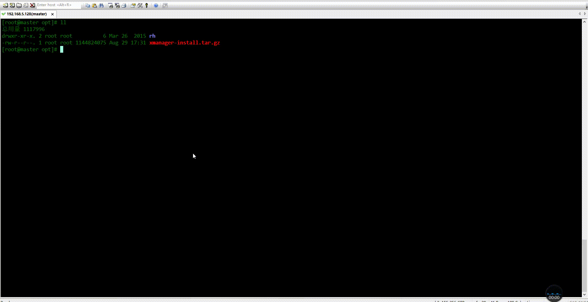
使用安装向导页面，安装XManager 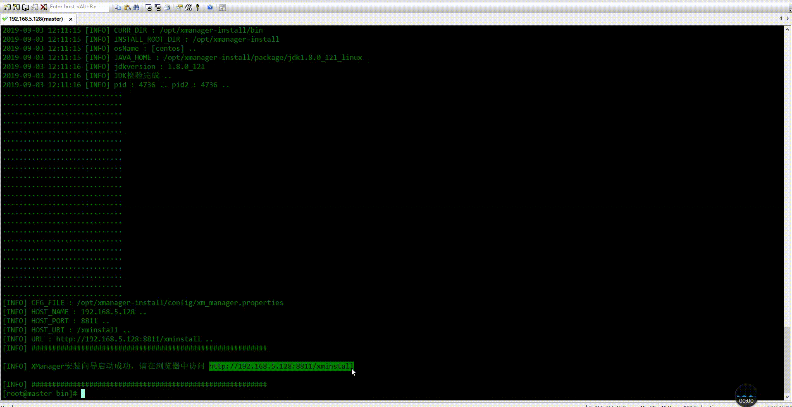
02. Manager/Agent设计
xManager为了能够管理各个节点（主机），需要将Agent安装到各个节点上。Agent使用Python开发，集成了Python虚拟环境及运行时的必要包，不依赖节点系统的软件环境。安装后占用磁盘大小大约40M，运行时占用内存不超过80M。
Manager/Agent设计 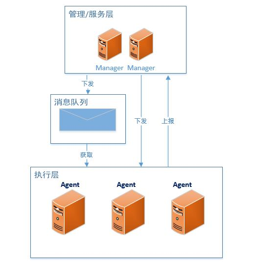 Agent的主要职责包括：
- 上报心跳给Manager；
- 采集并上报节点指标（CPU/内存/磁盘/网络等）；
- 采集并上报节点的进程信息；
- 接收并执行Manager下发的命令，上报执行结果；
- 定时执行Agent上的定时任务；
一般情况下，Manager向Agent下发任务的方式为主动并发推送，因此可以使得大量节点第一时间获得并执行任务。
Manager端包含两部分，
一部分由Java WEB构建，负责页面系统及元数据的交互；
另一部分由OpenResty +Lua 构建，主要负责Agent上报任务状态及数据的接收和处理，这一部分，可以横向扩展，
因此得以支撑数万台节点规模的管理。
03. 服务管理
在xManager的设计中，服务即软件，可安装运行在一个或多个节点上。
一个服务主要由安装包、组件（模块）、配置文件、相关脚本（安装，操作）、监控信息（端口，进程名）等组成；
xManager内置集成了系统部的大数据基础服务，也可以通过自定义服务，将自己需要集成和私有化部署的软件产品集成进来，统一进行交付；
服务(软件)市场 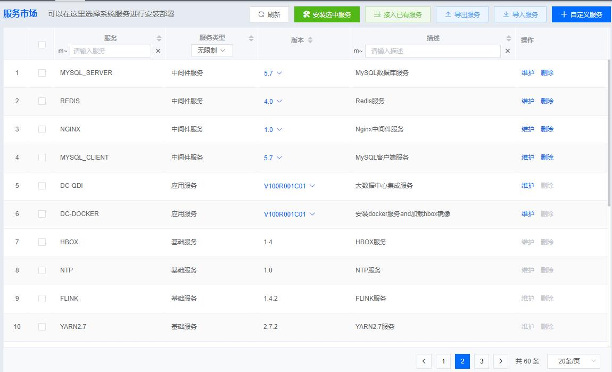
安装服务的过程主要包括：
- 为服务的每一个组件（模块），选择要安装的节点；
- 修改服务的默认配置；
- 确认并进行安装；
开始安装后，Manager会将服务的相关安装信息以任务的方式下发给所选节点的Agent，
Agent执行安装任务并汇报状态给Manager，在此过程中，可以通过界面查看实时的安装进度和安装日志（输出）。
服务的界面化快速安装 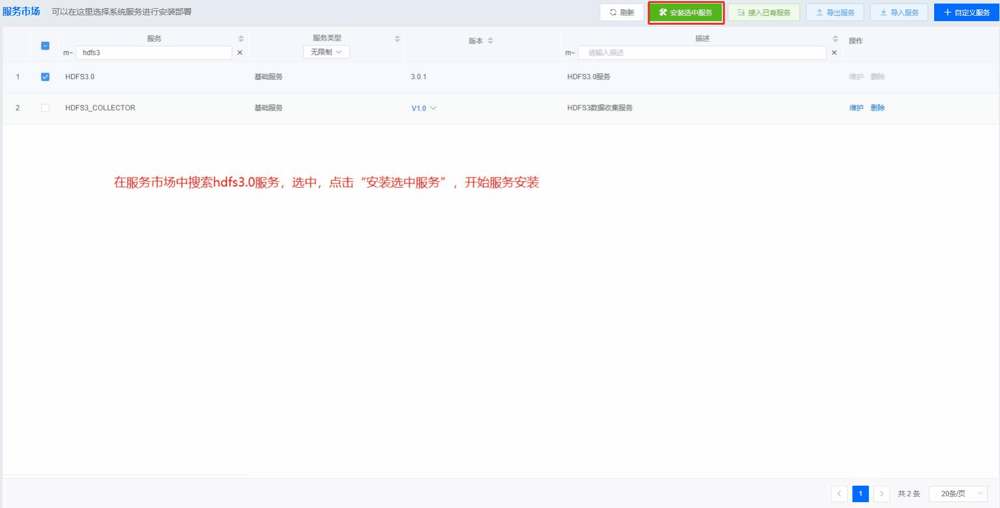
服务安装好后，可以对服务进行日常的运维，包括：
- 服务的状态监控；
- 服务的启动、停止、重启；
- 服务配置的变更与下发；
- 服务监控的配置：端口和进程；
- 服务安装节点的健康状态和指标监控；
- 服务操作的事件审计和告警信息查看；
服务的日常运维 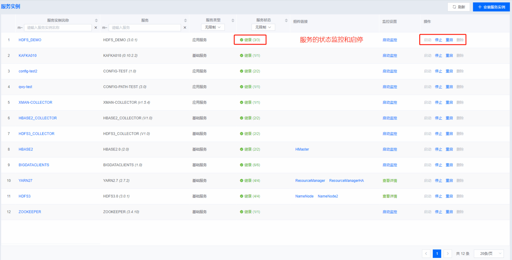
04. 数据收集
xManager中，内置了对节点，HDFS/HBase/YARN大数据服务的相关数据收集，同时提供了自定义指标数据收集和日志数据收集功能，方便用户将自己的业务指标及日志数据进行统一的收集存储与展示。
将一台节点接入XManager进行管理后，Agent会定时将节点的性能指标数据及进程数据采集上报，后续可直接进行监控分析。节点性能指标数据包括CPU、负载、内存、磁盘、IO、网络6个维度，共60余个常用指标，并可以根据需求进行扩展。
节点性能指标 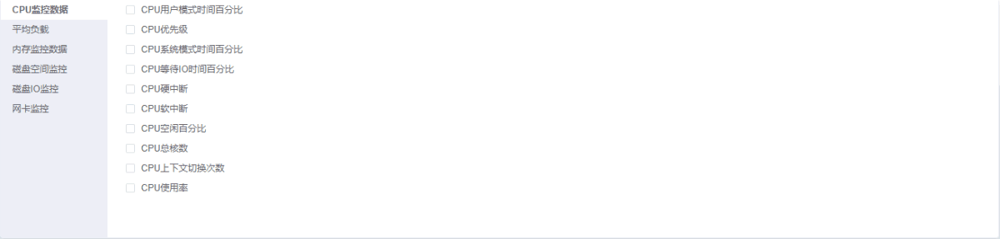
节点进程信息包括进程ID、父进程ID、用户、进程名称、线程数、cpu使用率、物理内存、虚拟内存、文件描述符数、IO等进程相关信息。
节点进程指标 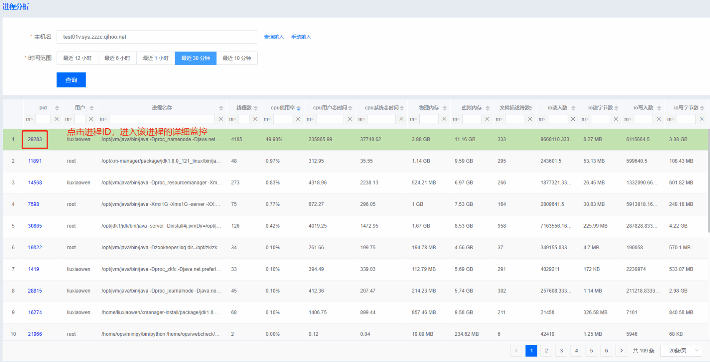
xManager上安装好大数据基础服务之后，通过服务提供的JMX，将服务运行时的指标进行采集并存储。
需要采集的指标及采集间隔可进行灵活配置，通过这些数据，XManager对这些服务进行状态监控、异常分析、风控告警等。
运维人员亦可通过分析这些数据进行异常定位，服务优化等。
大数据基础服务指标 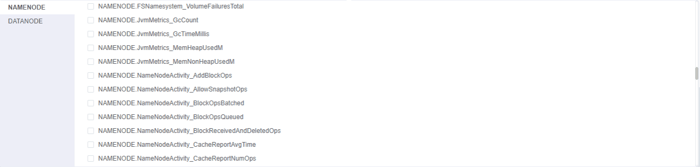
xManager支持用户创建一个指标数据收集任务来定义、收集、存储自己的指标数据。
任务创建好后，可以由XManager管理并定时运行该任务，也可以由用户自己执行任务，将数据上报到XManager；
如图所示：
自定义指标数据收集任务 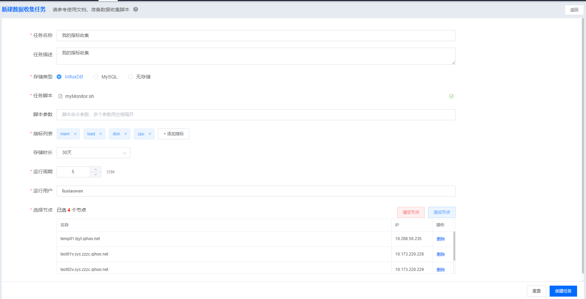
自定义指标数据收集任务运行流程 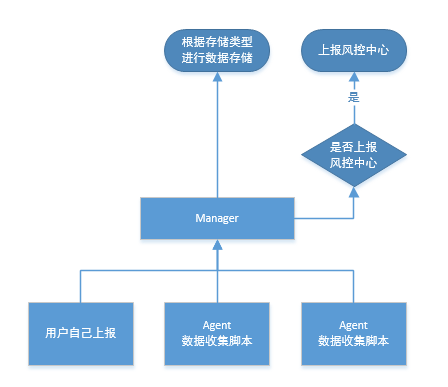
由Agent或者用户自己定时执行数据收集任务脚本，将收集到的数据进行上报，
Manager一方面根据任务所选存储类型进行数据存储，
另一方面，根据风控中心的相关配置，判断是否将该任务的数据上报至风控中心。
xManager提供了性能较好的日志采集器，通过界面化的配置，即可完成对业务日志数据的采集。
日志采集器的大致架构如图所示：
日志采集器 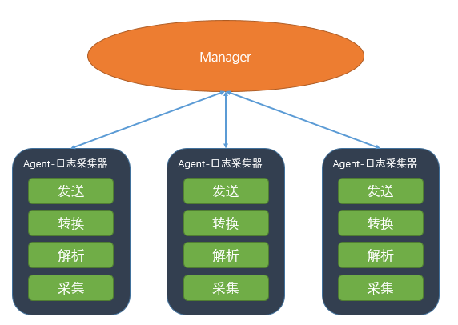
日志采集器运行在Agent安装节点上，由Manager提供界面进行统一管控，包括安装、启停、修改、扩容等。
在采集器内部，包含四个主要模块：
- 采集模块：负责从数据源中采集数据，数据源支持：文本文件、MySQL、MSSQL、Elasticsearch、Redis、HTTP等；
- 解析模块：负责将采集到的数据进行格式解析，比如：json格式解析、Nginx日志格式解析、KV格式解析等，当然，可以选择不解析，直接原始日志发送；
- 转换模块：负责将解析后的数据进行字段转换，比如：IP转换、日期转换、字符串替换、字符串拼接、字符串过滤等等。当然，可以选择不转换，直接原始日志发送；
- 发送模块：负责将数据发送至接收方，支持：Kafka、Elasticsearch、HTTP、本地文件、InfluxDB、MySQL等；
该采集器运行占用资源较小（测试数据：文本文件->Kafka，1小时采集和发送13G文件，1亿记录数，单核CPU使用率20%以下，内存使用70M以下），支持在采集端进行一些数据解析和转换（边缘计算），降低发送数据的网络及存储消耗，当然，在采集端进行解析和转换，会带来一定的资源消耗。采集器也可通过各种参数限制采集端的资源使用，比如，限制每次读取的数据量。
在xManager提供的页面上，可以很方便的添加和配置一个日志数据收集任务，将采集器安装并运行到多个节点上。
界面化创建日志收集任务 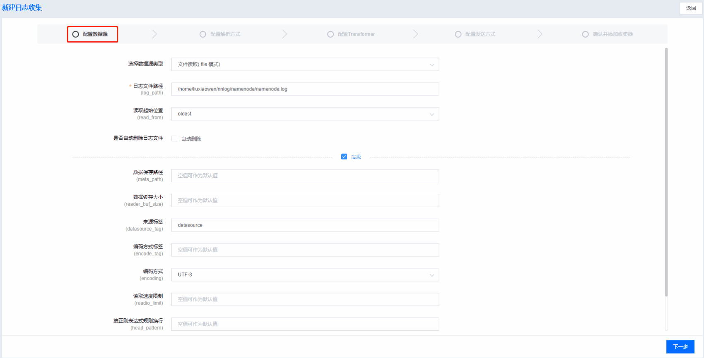
在采集器运行过程中，可以在界面上实时看到每个节点上采集到的日志大小、记录数、读取条数、发送条数、速率等信息，另外，可以通过界面扩容采集器到其他节点上。
采集器运行指标实时监控 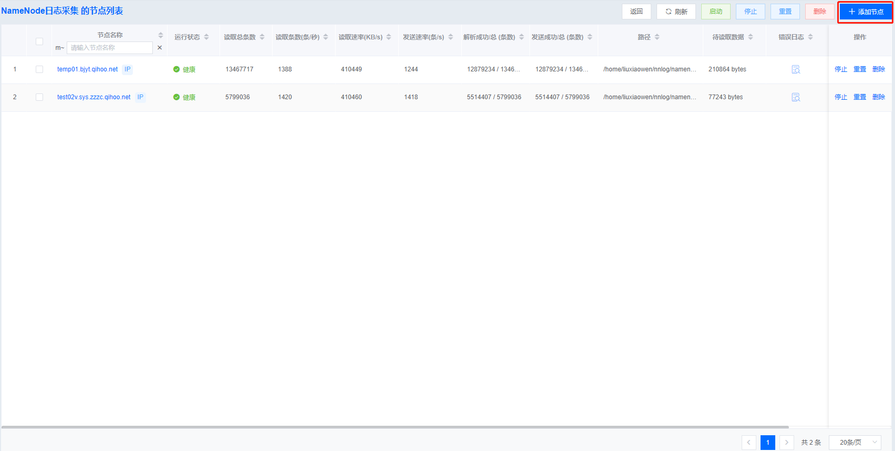
05. 风控中心
xManager提供的风控中心，通过实时或者准实时的方式，获取各类指标数据，根据配置的风控规则，对于触发风控规则的指标，一方面进行告警，另一方面，可以执行风控策略，实现问题或故障的自愈。
风控中心运作流程 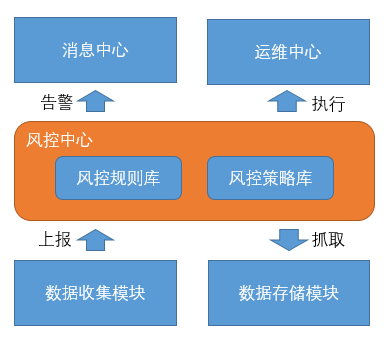
目前风控中心基于之前的告警中心正在逐步完善，包括完善风控规则的配置以及风控策略的执行。 简单风控规则 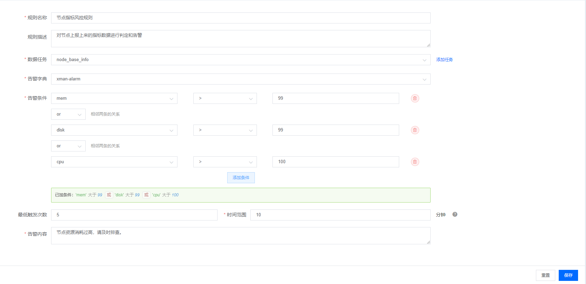
06. 运维工具
运维工具是运维中心提供的向大量节点分发文件或者执行命令/脚本的工具，具有操作简单，响应快等特点。以远程执行命令为例，在界面上输入要执行的命令，选择要执行的节点，输入执行用户，开始执行。
运维工具–执行命令 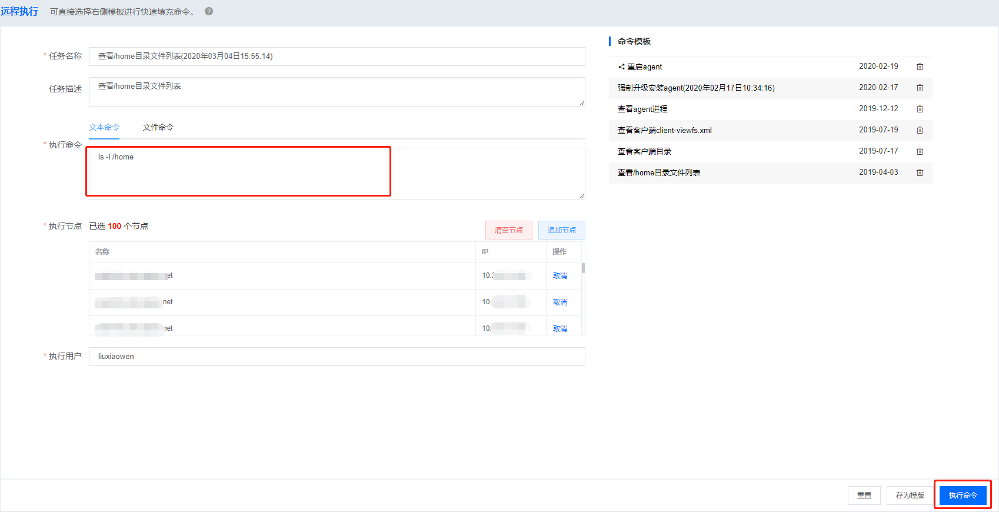
任务控制台 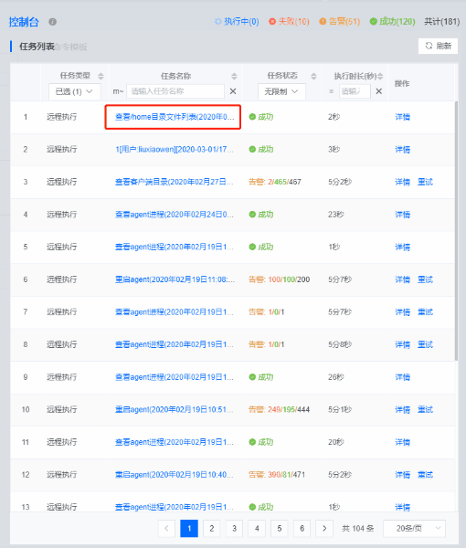
07. 安全审计
xManager目前通过以下方面确保平台安全：
- 操作审计：记录用户XManager上的一切行为；
- 违规阻断：通过配置阻断规则，阻断用户提交的危险操作；
- 安全巡检：定时检查节点上的安全风险，生成巡检报告；
- 权限控制：菜单、功能、数据三级权限控制；
安全审计 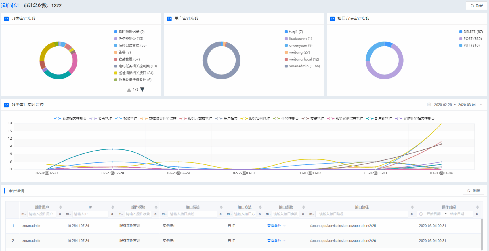
xManager目前已经设计了安全中心，在已有的安全保障方面的能力基础之上，增加了对大数据平台安全审计、其他业务系统安全审计方面的支持能力。
08. 其他
除了上面介绍到的功能模块，XManager还包括了支持接入第三方认证系统的用户认证模块；
方便用户和运维人员沟通记录的工单模块；
支持邮件、短信、电话等通知方式的消息中心；
用于知识沉淀、可供搜索和查询的运维知识库等等。
09. 写在最后
在过去的2019年，集成了360大数据基础平台能力的XManager，在南京、重庆、天津等地落地实施了多个政企项目，
同时，并作为客户方的产品集成解决方案，在客户方的对外项目集成交付中起到了很大的作用。
在未来，XManager希望能在解决大数据基础平台快速交付的基础上，将分布式安装部署监控管理的能力扩展到数据平台、AI平台、安全平台等其他业务平台，形成了统一的大数据全栈平台的一站式交付与运维解决方案，为后续支撑公司政企安全新战略，构建快速交付能力和低成本运维能力。